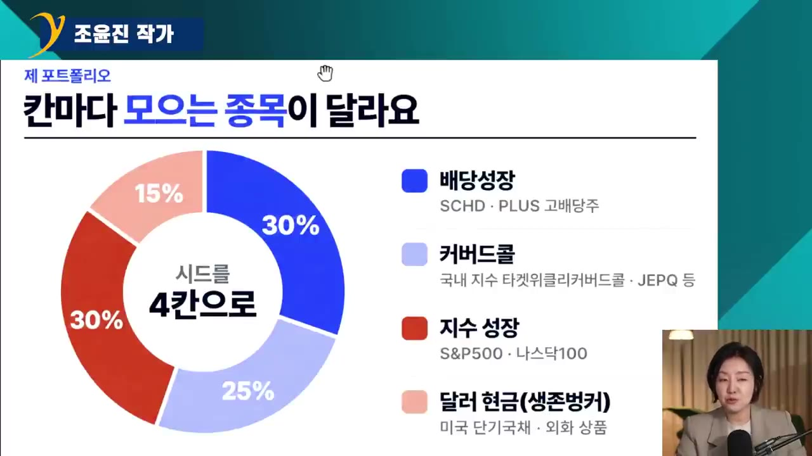
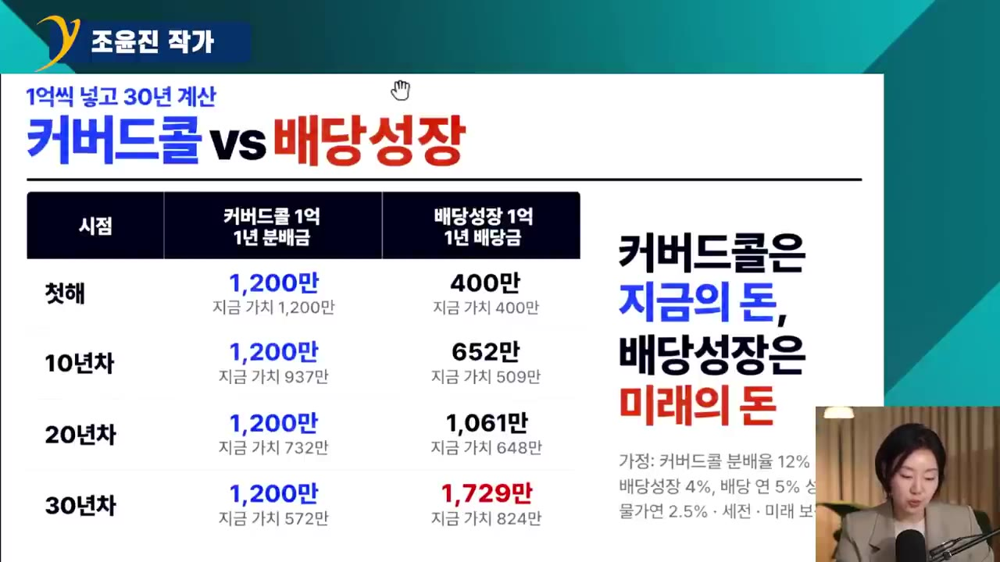
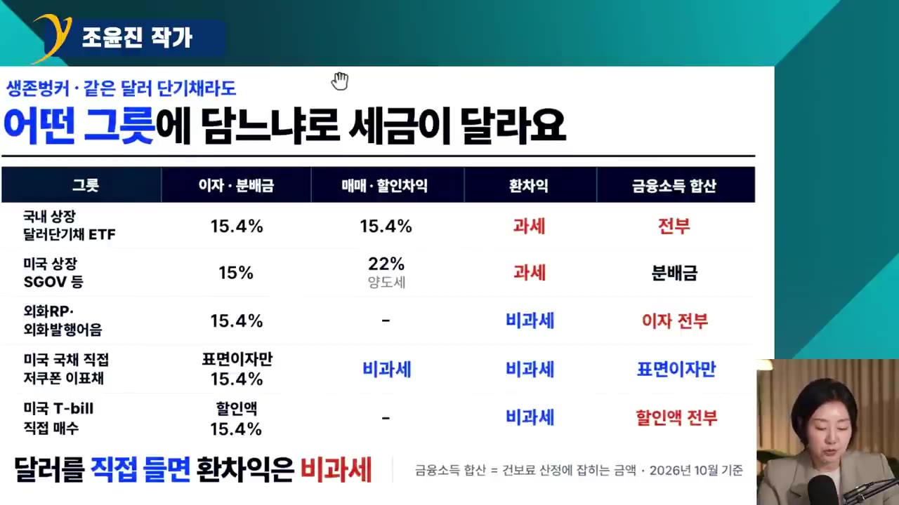

돈 없어도 해보세요 월배당 260 쉽습니다 세금은 6만원으로 끝! / 조윤진 작가 (풀버전)
🎙️ 자막 대신 영상 음성을 받아써서 정리 (ko (음성 받아쓰기·GPU))
▶ 원본 영상 보기한눈에 보기
- 조윤진 작가는 금융자산 약 6억 원으로 세전 월 평균 약 260만 원의 배당을 받습니다. 자산은 배당성장·지수성장·커버드콜·달러현금의 4칸으로 나눠 운용합니다.
- 계좌는 3층으로 나눕니다. 1층은 절세계좌(ISA·연금저축·IRP), 2층은 일반계좌 커버드콜, 3층은 해외직투입니다. 영상에 따르면 이렇게 하면 같은 배당을 받아도 세금과 건보료가 줄어듭니다(250만 원 받은 달의 세금이 6만 원 미만).
- 1억 원으로 30년을 계산하면, 커버드콜(12%)은 지금 돈 가치로 연 570만 원까지 줄어듭니다. 배당성장(4%, 매년 5% 증가)은 연 800만 원이 넘습니다. 그래서 커버드콜은 전체의 25% 이하로 둡니다.
- 달러는 세금 구조가 가장 유리한 '미국 국채 직접 매수'와 '외화 RP·발행어음'으로 굴립니다. 국내 상장 해외지수 ETF는 차익이 금융소득으로 잡히므로 절세계좌에 담습니다.
- 원칙은 세 가지입니다. 시장이 어떻든 구조를 바꾸지 않고, 금리를 예측하지 않으며, 목돈도 나눠서 삽니다.
이런 분께 도움이 됩니다
- 은퇴나 퇴사 후 배당으로 생활비 일부를 마련하려는 직장인(특히 건보료 지역가입자가 될 사람)
- ISA·연금저축·IRP·직투 계좌에 무엇을 담을지 정하지 못한 사람
- 커버드콜 비중과 달러 보관 방법을 세금 기준으로 고르고 싶은 사람
핵심 내용
세미파이어족과 현재 성적
- 세미파이어는 자산에서 생활비 일부를 받고, 나머지는 좋아하는 일을 '적당히' 해서 버는 삶입니다. 처음 목표는 배당 월 200만 원에 일해서 버는 100만 원이었습니다. (1:12)
- 금융자산은 올해 초 6억 원이었습니다. 해외직투와 달러 때문에 환율에 따라 평가금액이 6억 5천만 원까지 올랐다가 하루에 2~3천만 원씩 빠지기도 합니다.
- 평가금액이 흔들리는 동안 배당은 목표 200만 원에서 월 평균 약 260만 원(세전)으로 늘었습니다. (3:19)
💡 주식의 평가금액은 시장이 정하지만, 배당은 내가 만든 구조가 만든다.
- 구조를 만드는 데 약 10년이 걸렸습니다. 지금은 매수만 하고 매도는 거의 하지 않으며, 주식 앱은 하루 10분도 보지 않습니다.
- 지난 10년간 월 200만 원 정도를 꾸준히 넣었습니다. 처음에는 배당이 '3달러'씩 들어와 의심이 들었고, 월 100만 원을 넘긴 뒤에야 확신이 생겼다고 합니다.
- "배당 투자에서 짜릿함과 도파민이 느껴지면 잘못하고 있을 확률이 높다. '내가 뭐 하는 거지?' 싶으면 잘하고 있는 것."
자산 4칸 구조: 칸마다 역할이 있다
| 칸 | 비중 | 역할 | 쓰는 종목 |
|---|---|---|---|
| 배당성장형 | 약 30% | 배당이 해마다 늘어 인플레이션을 이김 | SCHD(슈드), PLUS 고배당주 |
| 지수성장형 | 약 30% | 원금(시드)을 키움 | S&P500·나스닥 추종(절세계좌에서는 국내 상장 ETF) |
| 커버드콜 | 25% 이하로 관리 | 당장의 현금흐름 + 세금·건보료 방어 | JEPQ(이전에는 JEPI), 국내 '타겟 위클리 커버드콜' 계열(자막상 불분명) |
| 달러운용 '생존 벙커' | 나머지 | 주식이 폭락해도 최소 2년 생활비를 주식을 팔지 않고 꺼내 씀 | 미국 단기국채, 외화 RP·발행어음 |

- 종목은 누구나 아는 오래된 것만 고릅니다. 백테스트보다 '실제 폭락장을 맞고 살아남은 기록'을 봅니다. (13:21)
- SCHD는 약 15년, PLUS 고배당주는 14년의 실제 기록이 있습니다. PLUS 고배당주에는 삼성전자·하이닉스가 없고 금융주와 전통 배당주가 많습니다.
- 최근 1~2년 안에 나와 배당률이 더 높은 종목은 폭락장 데이터가 없어서 생돈을 넣지 않습니다.
- 코스피·코스닥 지수는 담지 않습니다. 박스권이 약 13년 이어졌고, 그 기간 연평균 상승률이 2%대(본인도 "기억이 정확하지 않다"고 함)로 물가 2.5%보다 낮았기 때문입니다. (16:08)
커버드콜의 세금 효과
- 커버드콜 ETF 분배금 가운데 옵션 프리미엄에서 나온 부분은 비과세입니다. 기업 배당이 섞이는 달에만 세금이 조금 붙습니다.
- 한 종목에서 분배금 약 110만 원을 받았는데 세금은 1,180~1,190원이었습니다. (6:30)
- 영상에 따르면 건보료에도 거의 영향이 없습니다.
계좌 3층 구조: 세금·건보료 방어
- 1층 절세계좌
- 2층 일반계좌
- 3층 해외직투
- 11층 절세계좌
ISA·연금저축·IRP. 세금을 가장 덜 맞는 층. 납입 한도가 있습니다(ISA 연 2,000만 원, 연금저축+IRP 연 1,800만 원, 합계 약 3,800만 원). (18:18)
- 22층 일반계좌
국내 일반 위탁계좌에는 커버드콜 비중을 높입니다. 분배금은 많아도 세금은 거의 내지 않는 구조입니다.
- 33층 해외직투
배당 원천징수는 피할 수 없습니다. 대신 나중에 차익을 실현하면 양도세(분리과세)로 끝나 건보료에는 영향이 없습니다. (18:44)
- 매년 공제 한도(250만 원)에 맞춰 일부를 팔아 세금을 줄이는 방법도 씁니다.
- 1층을 다 채우기 어렵다면 비중을 보면서 정합니다. 퇴사가 빨라질 수 있으면 당장 꺼내 쓸 2층 배당도 필요합니다. 이미 해외주식만 있다면 3층부터 리밸런싱을 고민하면 됩니다.
ISA를 연금저축보다 먼저, 그리고 20년 이상 끌고 가기
- 젊은 사람에게는 ISA를 먼저 권합니다. 연금저축은 55세부터 인출할 수 있고 중도 인출하면 페널티가 있습니다. ISA는 납입한 원금을 언제든 페널티 없이 꺼낼 수 있습니다(다시 넣을 수는 없음). (21:12)
- ISA는 5년 납입을 꽉 채워 1억 원을 만듭니다. 납입이 끝나도 계좌는 계속 운용할 수 있습니다.
- 예시: 1억 원을 넣어 1억 5천만 원이 되었을 때 월 200만 원씩 원금 범위에서 꺼내면, 세금과 건보료가 더 붙지 않습니다. 이렇게 약 4년 6개월을 꺼낼 수 있고, 그동안 남은 돈은 계속 불어납니다. (23:07)
- 연금저축은 연 1,500만 원을 넘게 꺼내면 세금이 더 붙습니다. ISA는 꺼낼 시기와 금액을 내가 정합니다.
- 원금을 다 꺼낸 뒤 남은 수익은 연금저축으로 옮기거나 일반계좌로 돌리는 것 중에서 고르면 됩니다.
- 'ISA 만기 후 연금저축으로 이전'을 권하는 경우가 많지만, 이전하려면 전부 팔아야 합니다. 또 연금저축에서는 개별주와 레버리지를 살 수 없습니다.
💡 ISA는 이미 비과세·저율 과세로 굴러가는데 원금까지 자유롭게 꺼낼 수 있다. 그래서 오래 가져가는 편이 유리하다는 주장이다.
커버드콜 vs 배당성장: 30년으로 보면 뒤집힌다
- 가정: 각각 1억 원 투자. 커버드콜 분배율 12%(보수적으로 잡음), 배당성장 배당률 4%에 배당이 매년 5% 증가(SCHD의 최근 5년 배당성장률은 약 9%), 물가 연 2.5%. (26:07)
| 시점 | 커버드콜 | 배당성장 |
|---|---|---|
| 1년 차 | 연 1,200만 원(월 100만 원) | 연 400만 원 |
| 30년 차(명목) | 연 1,200만 원 그대로 | 연 1,700만 원 이상 |
| 30년 차(현재 가치) | 약 570만 원(반으로 줄어듦) | 800만 원 이상(처음의 2배) |

- 주된 일자리에서 퇴직하는 평균 나이는 49세입니다. 그래서 은퇴 후에도 최소 30년은 봐야 합니다. (27:32)
- 세미파이어가 좋은 이유: 투자 10년 차까지는 커버드콜이 압도적으로 많이 나옵니다. 그동안 소일거리로 번 돈을 배당성장에 넣으면, 나중에 커버드콜의 실질 가치가 꺾이는 부분을 메울 수 있습니다.
- 목돈(퇴직금 1~2억 원)이라도 커버드콜을 한 번에 사지 않습니다. 무조건 적립식으로 나눠 삽니다. (29:15)
- 고점에 커버드콜을 산 사람은 평가손익이 -35% 이상입니다(6월 매수 사례, 종목명은 자막상 불분명). 배당 100만 원이 나와도 1억 원이 6천만 원으로 줄어든 걸 보며 버티기 어렵습니다.
시장이 오르거나 내려도 구조는 그대로
- 상승장에서 FOMO를 느낄 때는 현금 칸에서 조금 빼서 베팅합니다. 배당주를 팔고 옮기지 않습니다. 배당주를 판 사람은 지금 -35%에 배당주까지 사라졌습니다. (31:28)
- '사과나무' 비유: 매매로 버는 것은 가지나 몸통을 베는 것이라 사과도 같이 떨어집니다. 배당성장은 나무를 키우고 열린 사과만 땁니다. (32:57)
- 국채 금리가 5%를 넘어도 구조는 바꾸지 않습니다. 채권은 원래 생존 벙커에 들고 있었기 때문입니다.
- 하지 않는 것: 금리를 예측해 비중 바꾸기(트레이딩과 같아짐), 하락장에서 새로운 것 시도하기(인버스를 샀다가 손절한 경험).
- 채권 이자는 고정입니다(1억 원에 연 500만 원 그대로). 배당성장은 3.5%에서 시작해 매년 5%씩 늘면 10년 차에 350만 원에서 570만 원이 됩니다.
💡 1등이 아니라 '중간만 하자'. 오른 뒤에 쫓아가면 꼴찌가 된다.
생존 벙커(달러)는 상품마다 세금이 다르다
| 상품 | 이자·분배금 | 매매차익·환차익 | 금융소득 합산·건보료 |
|---|---|---|---|
| 국내 상장 달러 단기채 ETF(SOFR 등) | 배당소득 과세(15.4%, 자막에는 "19.4%"로 나와 불분명) | 배당소득 15.4% 과세, 환차익도 차익에 섞여 과세 | 분배금·차익 모두 합산 |
| 미국 상장 초단기채(SGOV 등) | 미국 원천징수 15% | 양도세 22%(자막에는 25%도 언급, 불분명). 환차익도 섞여 과세 | 분배금만 합산, 차익은 건보료 무관 |
| 외화 RP·외화 발행어음 | 이자소득 15.4% | 환차익 비과세(달러 자체를 보유) | 이자만 합산 |
| 미국 국채 직접 매수(표면금리 낮은 것) | 표면이자에만 15.4% | 액면가까지 오르는 차액 비과세, 환차익 비과세 | 표면이자만 합산 |

본인은 SGOV를 모두 팔았습니다. "달러가 올라 번 돈에도 양도세를 내야 해서."
외화 RP: 증권사가 채권을 담보로 정한 날 이자를 붙여 되사는 약속입니다. 하루만 맡겨도 이자가 붙는 수시형이 있고, 기간을 정하면 이자가 더 높습니다.
외화 발행어음: 증권사가 직접 발행하는 차용증이라 담보가 없습니다. 자기자본 4조 원 이상의 인가받은 증권사만 팔 수 있고, 5곳에서 살 수 있습니다(삼성증권은 외화 발행어음이 아직 안 됨). 기간을 정한 상품이 RP보다 금리가 높은 경우가 많았다고 합니다. (40:21)
미국 단기국채: 지금 비중을 가장 높였습니다. 미국 정부가 갚으니 더 믿을 수 있고, 증권사 앱에서 100달러부터 살 수 있습니다. 보유 중인 11월 말 만기 국채의 표면이자는 약 1.25%입니다. (41:54)
금융소득이 연 2,000만 원을 넘으면 불리해집니다. 예적금과 보험 만기가 한 해에 겹치면 한 번에 넘을 수 있으니 시기를 나눠야 합니다.
- 지역가입자에게 건보료는 '피 같은 돈'입니다. 배당 월 1만 원을 늘리는 데 큰 시드가 드는데, 건보료는 2만 원이 나갑니다.
절세계좌에 담을 것, 담지 않을 것
- 1순위는 국내 상장 해외지수 ETF(S&P500·나스닥 추종)입니다. 직투 VOO·QQQ의 차익은 양도세지만, 국내 상장 해외 ETF의 매매차익은 배당소득(15.4%)으로 금융소득에 합산됩니다. (45:52)
- 예: 일반계좌에서 차익 3천만 원을 한 번에 실현하면 금융소득이 2천만 원을 넘어 종합과세(최고 45% 구간)되고 건보료도 크게 오릅니다.
- 절세계좌 안에서는 팔아서 차익이 나도 만기까지 세금이 미뤄집니다.
- 2순위는 배당률이 높은 국내 고배당주(6~7% 이상 금융주 등)입니다. 일반계좌에서는 15.4%가 바로 빠지지만, 절세계좌에서는 100만 원이 그대로 재투자 시드가 됩니다. (46:35)
- 국내 상장 미국배당다우존스 ETF는 절세계좌 효과가 줄었습니다. 2025년 1월부터 미국 원천징수세를 뗀 금액(100만 원 중 85만 원)이 들어옵니다. 돌려받는 것(크레딧)은 계좌를 해지할 때입니다. (47:29)
- 그래서 SCHD는 직투로 모으고, ISA의 한정된 한도는 S&P·나스닥 국내 ETF와 국내 고배당주에 쓰라고 권합니다.
남은 월급 기간별 포트폴리오
나이보다 '안정적으로 월급을 받을 기간이 얼마나 남았나'를 기준으로 삼습니다. (50:04)
| 월급 받을 기간 | 권하는 구성 |
|---|---|
| 20년 이상 | 커버드콜은 거의 안 하거나 체험용으로 조금. 시드 키우기에 집중(월급이 있으면 하락장에서도 안 팔 수 있음) |
| 약 10년(40대) | 4칸 구조(배당성장·지수·커버드콜·달러현금)를 이때부터 만듦 |
| 5년 이내(50대) | 커버드콜 최대 약 40%, 배당성장 약 40%, 지수 약 20% (51:25) |
이 구조를 만든 이유
- 삼성SDI IR팀에서 하루 최대 5번 애널리스트·펀드매니저를 만나며 개별주 투자를 했습니다. FX 마진 트레이딩(평균 100:1 레버리지)도 해 봤지만, 몇 년 한 사람들이 피폐해지는 것을 봤습니다. 미국 단타는 밤잠과 일상을 망칩니다.
- 어머니가 60세 전에 암으로 돌아가셨습니다. 뇌 전이로 인지력이 떨어지는 과정을 보며 '내가 아프거나 일찍 죽으면 아이가 이 매매를 이어받을 수 있을까?' 생각했습니다. (54:53)
💡 석 달 동안 앱을 열지 않아도, 80살이 되어 매매를 못 해도 돌아가는 구조가 목표.
- 리밸런싱은 퀀트처럼 기계적으로 합니다. 커버드콜이 25%를 넘으면 줄이고, 25%가 차 있으면 더 사지 않습니다.
금·비트코인을 정리한 이유
- 해외에 살 때 소액 예금에 보관료가 붙고 금리가 0%인 나라도 있었습니다. 그래서 금을 조금씩 샀습니다. 10년 전 시드 5천만 원 가운데 금이 약 3천만 원, 달러가 약 2천만 원이었습니다. (59:13)
- 금 현물은 차익이 비과세지만, 금 ETF는 과세됩니다(채권 ETF와 같음). 금을 팔아 비트코인에 넣기도 했습니다.
- 비트코인은 2027년 1월부터 차익 과세가 시작되고, 대여 등 여러 거래에 세금이 붙어 계산이 복잡해집니다. 그래서 전량 팔고 커버드콜로 옮겼습니다.
- 금과 비트코인의 공통 단점은 들고 있어도 현금이 들어오지 않는다는 것입니다. 퇴사를 생각한다면 현금흐름 자산으로 리밸런싱을 권합니다. (1:00:56)
따라 해보기
준비물
- 증권사 계좌: ISA, 연금저축, IRP, 국내 일반 위탁계좌, 해외주식 계좌(같은 증권사 앱에서 개설 가능)
- 꾸준히 넣을 월 투자금(작가는 10년간 월 약 200만 원)
- 생존 벙커용 달러: 최소 2년 치 생활비가 목표
- 소요 시간: 구조를 만드는 데는 하루면 되지만 채우는 데는 수년이 걸림(작가는 10년)
단계별 방법
- 월급 기간 확인
- ISA부터 채우기
- 절세계좌 종목 담기
- 직투로 SCHD
- 일반계좌 커버드콜
- 생존 벙커 만들기
- 규칙대로 유지
- 1월급 기간 확인
안정적으로 월급을 받을 기간이 20년 이상인지, 약 10년인지, 5년 이내인지 정하고 위 표에서 비중을 고릅니다. (50:04)
- 2ISA부터 채우기
ISA를 만들어 연 2,000만 원씩 5년 납입해 1억 원을 목표로 합니다. 나이가 젊을수록 연금저축보다 먼저 채웁니다. (21:12)
- 3절세계좌 종목 담기
ISA·연금계좌에는 국내 상장 S&P500·나스닥 추종 ETF와 국내 고배당주(예: PLUS 고배당주)를 담습니다.
- 4직투로 SCHD
배당성장 중 미국 몫은 해외 직투 계좌에서 SCHD로 모읍니다. 매년 공제 한도(250만 원)만큼 차익을 실현하는 방법도 씁니다.
- 5일반계좌 커버드콜
국내 일반 위탁계좌에서 커버드콜 ETF를 전체 자산의 25% 이하로 적립식으로 삽니다. 목돈도 나눠서 삽니다. (29:15)
- 6생존 벙커 만들기
2년 치 생활비를 달러로 둡니다. 금액이 크고 세금·건보료가 걱정되면 증권사 앱에서 미국 단기국채(표면금리 낮은 것)를 100달러부터 삽니다. 소액이면 외화 RP나 외화 발행어음을 씁니다.
- 7규칙대로 유지
커버드콜이 25%를 넘으면 줄이고, 금리 예측이나 하락장 베팅은 하지 않습니다. 매수만 계속합니다.
따라 할 수 있는지 점검
- ✅ 바로 따라 할 수 있음: 1단계(기간별 비중), 2단계(ISA 납입 목표), 5단계(25% 상한·적립식), 7단계(유지 규칙)
- ⚠️ 3단계 「절세계좌 종목 담기」: 국내 상장 S&P500·나스닥 ETF의 구체적인 종목명이 영상에 나오지 않습니다 → 증권사 앱에서 'S&P500', '나스닥100'을 검색해 총보수와 상장 기간(오래된 것)을 비교해 고르세요(보충).
- ⚠️ 5단계 「일반계좌 커버드콜」: 국내 커버드콜 종목명이 자막에서 '타겟 위클리 커버드콜'로만 나와 정확한 상품명이 불분명합니다 → 영상 14:51 전후 화면이나 저서에서 확인하세요.
- ⚠️ 6단계 「생존 벙커 만들기」: 미국 국채를 사는 메뉴 위치는 영상에 나오지 않습니다 → 이용하는 증권사 앱의 '채권'이나 '해외채권/장외채권' 메뉴에서 미국 국채를 검색하세요(보충). 증권사마다 취급 여부와 최소 금액이 다를 수 있습니다.
- ⚠️ 전체 비중: 배당성장 30%, 지수 30%, 커버드콜 25% 이하는 나왔지만 달러 칸의 정확한 비율은 나오지 않았습니다 → '2년 치 생활비' 기준으로 직접 계산하세요.
- ⚠️ 연금저축·IRP의 세액공제와 각 계좌의 상세 조건(서민형 ISA 등)은 다루지 않았습니다 → 증권사나 국세청 안내에서 확인하세요(보충).
- ❓ 세율 수치 일부가 자막에서 엇갈립니다(국내 달러 ETF "19.4%", SGOV 양도세 "22%/25%"). 실제 적용 세율은 증권사나 세무 안내로 확인이 필요합니다.
확인 방법
- 월마다 받은 분배금과 원천징수된 세금을 계좌별로 확인합니다. 커버드콜 분배금의 세금이 매우 작으면 2층 구조가 작동하는 것입니다.
- 한 해 금융소득(이자+배당+국내 ETF 분배금·차익)이 2,000만 원 아래인지 연말 전에 합산해 봅니다.
- 커버드콜 평가금액이 전체의 25% 이하인지 정기적으로 확인합니다.
막히면
- 배당이 몇 달러씩만 들어와 의심이 들면 정상입니다. 작가도 월 100만 원 전까지 같은 생각을 했습니다.
- 상승장에서 FOMO가 오면 배당주를 팔지 말고 현금 칸에서만 일부를 씁니다.
- 국내 상장 해외 ETF를 일반계좌에서 크게 팔면 종합과세와 건보료 폭탄을 맞을 수 있습니다. 팔기 전에 금액을 나누세요.
- 금 ETF와 달러 ETF는 현물과 달리 차익에 세금이 붙습니다.
기억할 숫자·인용
- 금융자산 약 6억 원(최고 6억 5천만 원), 세전 배당 월 평균 약 260만 원(처음 목표 200만 원)
- 250만 원 받은 달의 세금 6만 원 미만 / 커버드콜 분배금 110만 원에 세금 1,180~1,190원
- 커버드콜 비중 상한 25%, 생존 벙커 최소 2년 생활비
- 30년 차 현재 가치: 커버드콜 약 570만 원 vs 배당성장 800만 원 이상(1억 원 기준)
- ISA 연 2,000만 원 × 5년 = 1억 원. 연금저축+IRP 연 1,800만 원. 연금 인출 연 1,500만 원 초과 시 추가 과세
- 주된 일자리 평균 퇴직 나이 49세, 코스피 박스권 약 13년
- 미국 국채는 100달러부터 매수 가능. 비트코인 과세는 2027년 1월부터(영상 속 언급)
- "주식의 평가금액은 시장이 정해주지만 배당은 내가 만든 구조가 만든다."
- "배당 투자를 하는데 도파민이 터지면 잘못하고 있을 확률이 높다."
생각해볼 점
- 30년 시뮬레이션은 배당이 매년 5%씩 늘고 커버드콜 분배율 12%가 유지된다는 가정에 기댑니다. 실제 배당 증가율, 커버드콜의 원금 감소, 주가 변화는 반영하지 않은 단순 비교입니다(영상 속 가정).
- 세율, 건보료, 해외 ETF 과세 방식(2025년 변경), 가상자산 과세 시점은 법이 바뀔 수 있습니다. 자막 수치도 일부 엇갈립니다. 실행 전에 최신 세법이나 증권사 안내로 확인하는 것이 안전합니다(내 의견).
- 미국 자산과 달러 비중이 높은 구조라 환율 하락기에는 원화 평가금액이 크게 줄 수 있습니다. 코스피를 제외한 판단도 과거 13년 데이터에 근거한 작가 개인의 선택입니다(내 의견).
바로 해볼 일
- 내 계좌(ISA·연금저축·IRP·일반·해외)를 1·2·3층으로 나눠 지금 무엇이 어디에 있는지 적어 보기
- 국내 상장 해외지수 ETF를 일반계좌에 갖고 있다면 절세계좌로 옮겨 모을지 검토하기
- 2년 치 생활비를 계산하고, 증권사 앱에서 외화 RP·발행어음·미국 단기국채 메뉴를 찾아 금리 비교하기